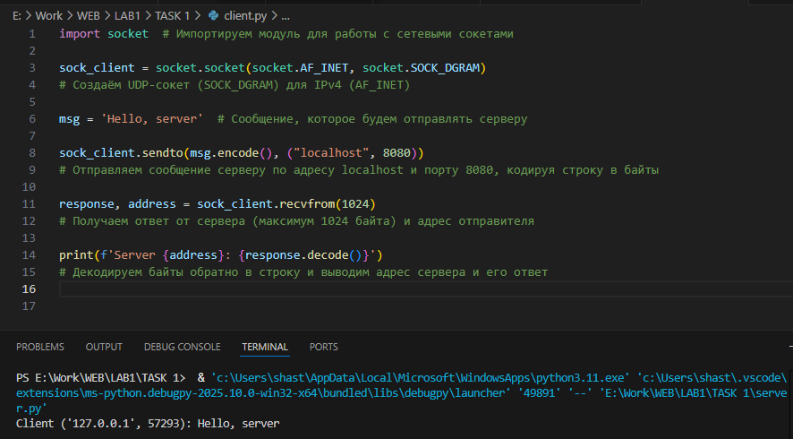
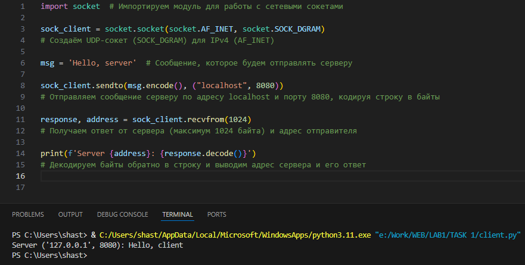

Лабораторная работа №1
Задание 1
Цель
Реализовать клиентскую и серверную часть приложения. Клиент отправляет серверу сообщение «Hello, server», и оно должно отобразиться на стороне сервера. В ответ сервер отправляет клиенту сообщение «Hello, client», которое должно отобразиться у клиента.
Требования
- Обязательно использовать библиотеку socket.
- Реализовать с помощью протокола UDP.
Выполнение
В ходе выполнения были реализованы клиент и сервер, где:
- Клиент отправляет строку "Hello, server" серверу по протоколу UDP.
- Сервер принимает сообщение и выводит его в консоль.
- В ответ сервер отправляет строку "Hello, client", которая отображается в консоли у клиента.
Клиент
import socket # Импортируем модуль для работы с сетевыми сокетами
sock_client = socket.socket(socket.AF_INET, socket.SOCK_DGRAM)
# Создаём UDP-сокет (SOCK_DGRAM) для IPv4 (AF_INET)
msg = 'Hello, server' # Сообщение, которое будем отправлять серверу
sock_client.sendto(msg.encode(), ("localhost", 8080))
# Отправляем сообщение серверу по адресу localhost и порту 8080, кодируя строку в байты
response, address = sock_client.recvfrom(1024)
# Получаем ответ от сервера (максимум 1024 байта) и адрес отправителя
print(f'Server {address}: {response.decode()}')
# Декодируем байты обратно в строку и выводим адрес сервера и его ответ
Сервер
import socket # Импортируем модуль socket для работы с сетевыми соединениями
sock_server = socket.socket(socket.AF_INET, socket.SOCK_DGRAM)
# Создаём UDP-сокет (SOCK_DGRAM) для протокола IPv4 (AF_INET)
sock_server.bind(('localhost', 8080))
# Привязываем сокет к адресу 'localhost' и порту 8080, чтобы сервер мог принимать данные
while True: # Бесконечный цикл для постоянного прослушивания входящих сообщений
request, address = sock_server.recvfrom(1024)
# Получаем сообщение от клиента и его адрес; буфер ограничен 1024 байтами
print(f'Client {address}: {request.decode()}')
# Декодируем байты в строку и выводим сообщение клиента в консоль
msg = 'Hello, client' # Создаём ответное сообщение
sock_server.sendto(msg.encode(), address)
# Кодируем строку в байты и отправляем обратно клиенту по его адресу
Результат
При запуске сервер ожидает сообщения. На стороне клиента:
Hello, client
На стороне сервера:
Hello, server
Результаты работы после запуска обоих файлов:
 
Вывод
Реализовал простую клиент-серверную архитектуру с использованием UDP-сокетов. Клиент отправляет сообщение серверу, сервер его принимает и отвечает клиенту.